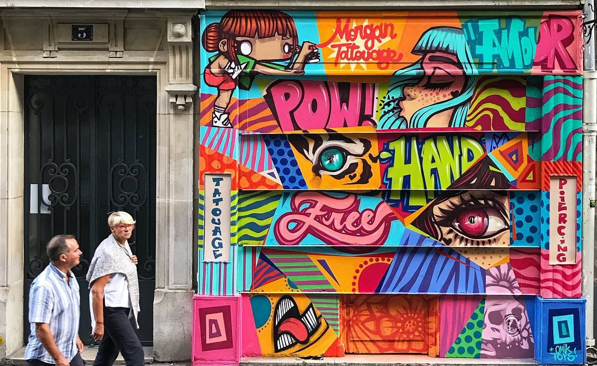
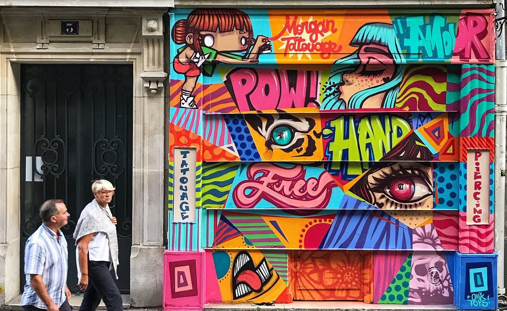

ARTE DE RUA EMBELEZA AS RUAS DE LONDRINA LIKY
“LIKY" é o nome registrado do/da artista que nas ultimas semanas tem sendo alvo de criticas e elogios por diversos moradores de Londrina.
“LIKY" é o nome registrado do/da artista que nas ultimas semanas tem sendo alvo de criticas e elogios por diversos moradores de Londrina.
